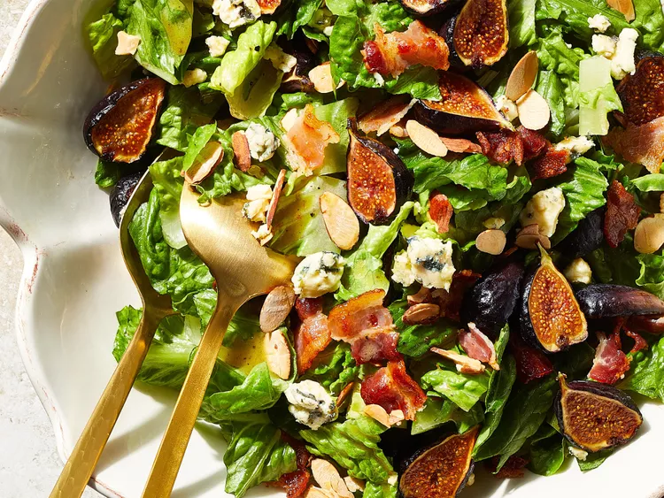

Chopped Salad with Figs and Blue Cheese

Description:
Sweet figs and sharp blue cheese come together with crunchy romaine for a flavorful end-of-summer side salad.
Ingredients:
-
Bacon
-
Figs
-
Olive Oil
-
Cider Vinegar
-
Dijon Mustard
-
Honey
-
Kosher Salt
-
Black Pepper
-
Romaine Lettuce
-
Toasted Almonds
-
Crumbled Blue Cheese
-
Place bacon in a large skillet and cook over medium-high heat, turning occasionally, until evenly browned, 5 to 10 minutes. Drain bacon slices on paper towels, reserving 1/2 teaspoon drippings in the skillet.
-
Add figs, cut sides down, to the skillet. Cook until browned, about 3 minutes.
-
Whisk together oil, vinegar, mustard, honey, salt, and pepper in a large bowl. Add browned figs, bacon, lettuce, almonds, and blue cheese; toss to combine.
Preparation:
Link back to Homepage